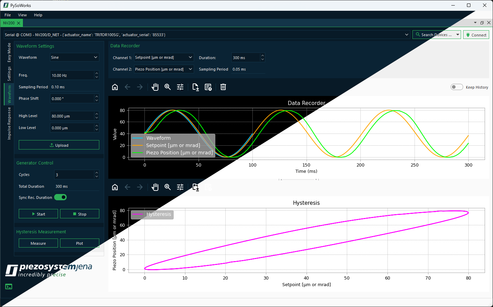
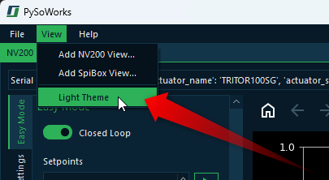
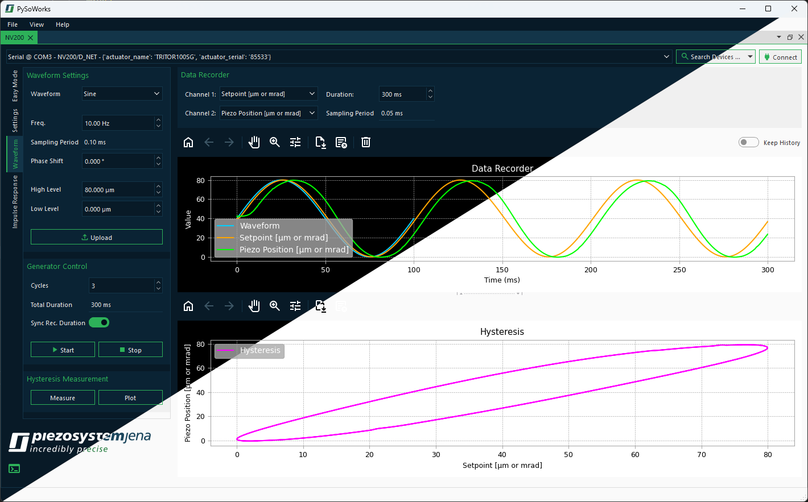
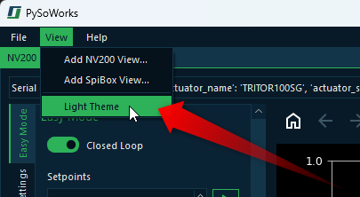

8. Interface Theme
The software supports switching between dark and light theme.
To toggle the theme between light and dark, use the main menu item .
The selected theme will be applied immediately and will persist across sessions.
The software supports switching between dark and light theme.
To toggle the theme between light and dark, use the main menu item .
The selected theme will be applied immediately and will persist across sessions.